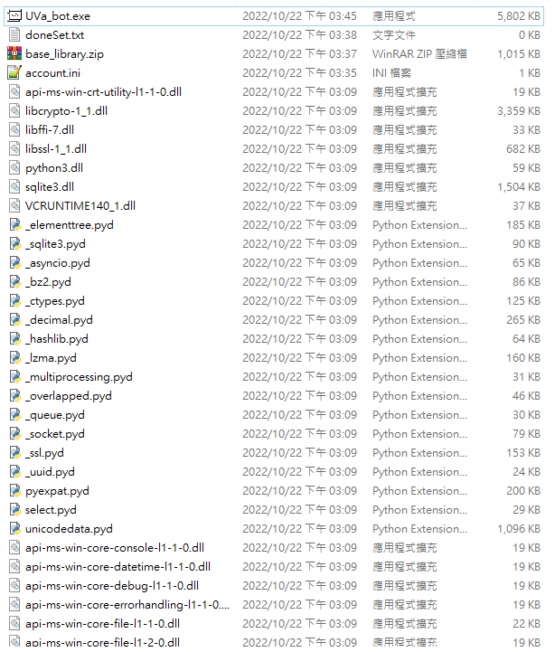

PyInstaller -D 檔案雜亂
在專案完成後為了方便部屬有時會有將專案打包的需求，以 Python 來說目前常用的工具為 PyInstaller。
PyInstaller 主要會有兩個問題，一是它會將該環境所有套件打包，造成體積龐大，這點可透過創建新的虛擬環境解決。
另一點，為了簡潔，一般會帶參數 -F 使其打包後僅為一個執行檔，但由於它會將所有套件打包在一起，造成該執行檔體積龐大，執行緩慢，所以有時會改用 -D 這個參數使其打包後為一個目錄，又由於它會將所有套件打包在一起，所以檔案看起來會很雜亂。
以目前的小專案為例，打包成一個執行檔後會長這樣
不到千行的專案卻有 60MB
若打包為一個目錄的話會長這樣

執行檔本身雖然縮小為 5MB，但整個目錄略顯雜亂，要透過設定檔調整程式時也不易直接看出。
解決方法
從 Shell Script 得到靈感，在原本的目錄加一層上級目錄，用 bat 執行原本打包好的程式，使其執行時加入變數的目錄為上級目錄，如此便可將設定檔與一些產出檔案和原程式區隔開，最後將 bat 轉為 exe 檔案即可。
最終看起來會像這樣，app 內放的為打包成目錄的程式
本部落格所有文章除特別聲明外，均採用 CC BY-NC-SA 4.0 許可協議。轉載請註明來自 Larry's notes！
評論